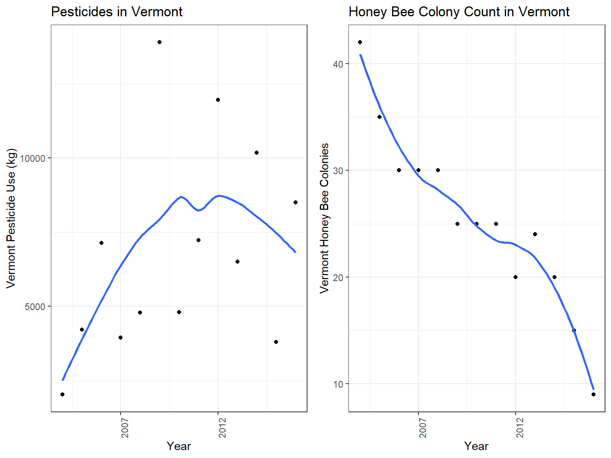

Additional Analysis
Pearson Correlation Coefficients for Mean Persticide Use and Bee Population by State
To understand the effect of the pesticide use trends in the United States and the potential effect on bee population for each state, we calculated the Pearson Correlation for the time period of 2004-2016.


Pesticide Use in the US by Year
merged_state_data = read.csv("./data/merged_state_data.csv")
merged_state_data %>%
lm(honey_producing_colonies ~ high, data = .) %>%
broom::tidy() %>%
knitr::kable(digits = 2)| term | estimate | std.error | statistic | p.value |
|---|---|---|---|---|
| (Intercept) | 50.63 | 1.91 | 26.56 | 0 |
| high | 0.00 | 0.00 | 14.22 | 0 |
merged_state_data %>%
lm(honey_producing_colonies ~ high + compound + state, data = .) %>%
broom::tidy() %>%
knitr::kable(digits = 2)| term | estimate | std.error | statistic | p.value |
|---|---|---|---|---|
| (Intercept) | 9.38 | 2.02 | 4.65 | 0.00 |
| high | 0.00 | 0.00 | 2.25 | 0.02 |
| compoundCHLORPYRIFOS | 0.07 | 0.86 | 0.08 | 0.94 |
| compoundCLOTHIANIDIN | -0.20 | 0.92 | -0.22 | 0.83 |
| compoundFIPRONIL | -1.22 | 1.10 | -1.11 | 0.27 |
| compoundIMIDACLOPRID | 0.65 | 0.91 | 0.72 | 0.47 |
| compoundTHIACLOPRID | 0.69 | 1.27 | 0.55 | 0.58 |
| stateArizona | 18.71 | 2.75 | 6.81 | 0.00 |
| stateArkansas | 20.67 | 2.69 | 7.68 | 0.00 |
| stateCalifornia | 363.32 | 2.67 | 135.94 | 0.00 |
| stateColorado | 18.66 | 2.60 | 7.18 | 0.00 |
| stateFlorida | 179.58 | 2.63 | 68.18 | 0.00 |
| stateGeorgia | 49.45 | 2.66 | 18.59 | 0.00 |
| stateIdaho | 85.00 | 2.52 | 33.77 | 0.00 |
| stateIllinois | -1.85 | 2.59 | -0.71 | 0.48 |
| stateIndiana | -2.45 | 2.53 | -0.97 | 0.33 |
| stateIowa | 20.01 | 2.62 | 7.64 | 0.00 |
| stateKansas | 1.89 | 2.59 | 0.73 | 0.47 |
| stateKentucky | -4.81 | 2.61 | -1.84 | 0.07 |
| stateLouisiana | 27.29 | 2.72 | 10.04 | 0.00 |
| stateMaine | -2.50 | 2.74 | -0.91 | 0.36 |
| stateMaryland | -7.00 | 4.61 | -1.52 | 0.13 |
| stateMichigan | 61.71 | 2.53 | 24.39 | 0.00 |
| stateMinnesota | 115.04 | 2.60 | 44.22 | 0.00 |
| stateMississippi | 7.36 | 2.69 | 2.73 | 0.01 |
| stateMissouri | 3.53 | 2.60 | 1.36 | 0.18 |
| stateMontana | 133.46 | 2.60 | 51.36 | 0.00 |
| stateNebraska | 34.58 | 2.59 | 13.33 | 0.00 |
| stateNevada | 0.57 | 3.15 | 0.18 | 0.86 |
| stateNew Jersey | 1.44 | 2.56 | 0.56 | 0.57 |
| stateNew Mexico | -2.35 | 2.73 | -0.86 | 0.39 |
| stateNew York | 45.58 | 2.55 | 17.90 | 0.00 |
| stateNorth Carolina | 2.00 | 2.52 | 0.79 | 0.43 |
| stateNorth Dakota | 404.58 | 2.62 | 154.31 | 0.00 |
| stateOhio | 5.66 | 2.52 | 2.24 | 0.02 |
| stateOklahoma | -6.44 | 4.79 | -1.34 | 0.18 |
| stateOregon | 42.91 | 2.51 | 17.08 | 0.00 |
| statePennsylvania | 14.24 | 2.53 | 5.62 | 0.00 |
| stateSouth Carolina | -3.86 | 4.30 | -0.90 | 0.37 |
| stateSouth Dakota | 231.49 | 2.64 | 87.60 | 0.00 |
| stateTennessee | -2.67 | 2.57 | -1.04 | 0.30 |
| stateTexas | 90.02 | 2.65 | 33.95 | 0.00 |
| stateUtah | 16.08 | 2.65 | 6.07 | 0.00 |
| stateVermont | -4.51 | 2.59 | -1.74 | 0.08 |
| stateVirginia | -3.60 | 2.56 | -1.41 | 0.16 |
| stateWashington | 49.21 | 2.52 | 19.56 | 0.00 |
| stateWest Virginia | -3.18 | 2.60 | -1.22 | 0.22 |
| stateWisconsin | 53.25 | 2.61 | 20.40 | 0.00 |
| stateWyoming | 30.64 | 2.63 | 11.65 | 0.00 |